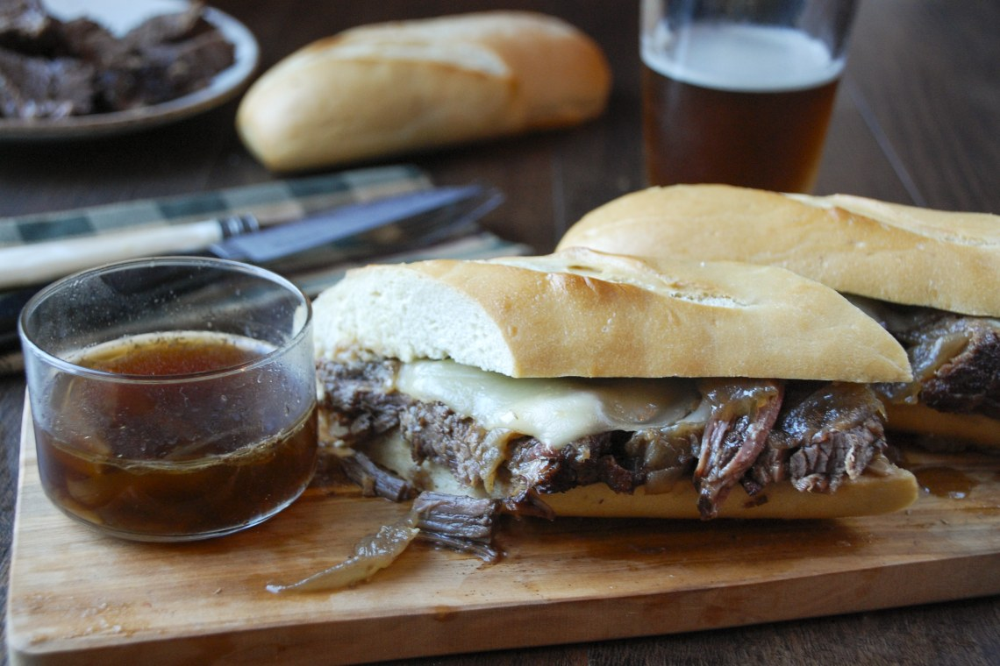

French Dip

Ingredients
- 3 tbsp olive oil
- 1 tsp Italian herb mix
- French baguette
- Mayonaise
- 1/2 lb Roast beef
- Provolone cheese
- Garlic salt
Instructions
- Preheat oven to 350oF.
- Mix olive oil and Italian herb mix together.
- Cut baguette to size, spread olive oil onto both sides.
- Put bread in oven for 5 minutes.
- After taking bread out, spread a thin layer of mayonaise on both sides of the bread.
- Put roast beef and provolone on bread. Sprinkle with garlic salt.
- Put back in oven for 5 more minutes.
- Serve and enjoy with an optional au jus!
People have a lot to say about this recipe:
I made this on New Years Eve for my daughter and me and yesterday she asked me to make it again.
She LOVED it. This most definitely has become a staple in my household.